Maniwa, Okayama: things to do, food and stays
Maniwa · Okayama
Maniwa
Highlighted on the Okayama map.
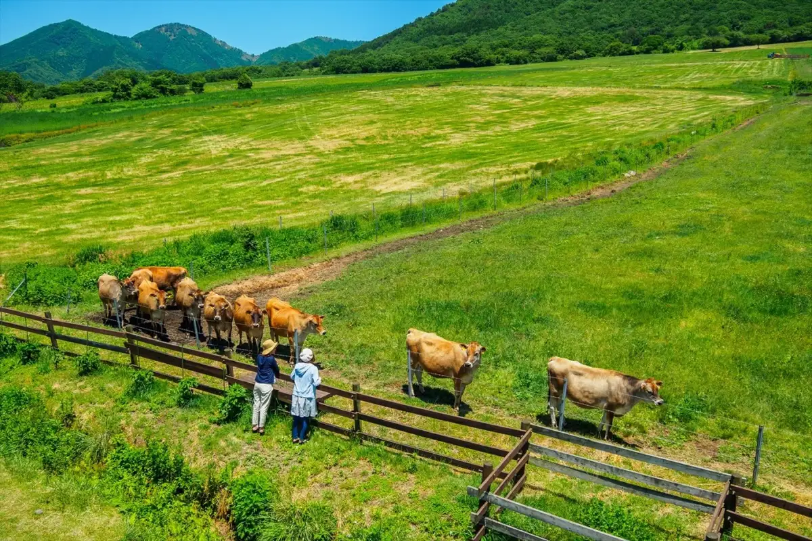
Stay
八景
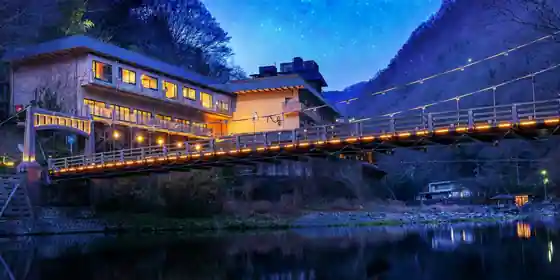
Hakkei
Inn at Yuhara Onsen in Toyosaka, Maniwa with riverside setting.
フェアフィールド･バイ･マリオット･岡山蒜山高原
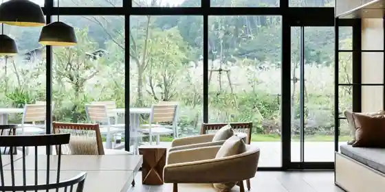
Feafirudo Feafirudo Bai Bai Mariotto Mariotto Okayama Hiruzen Kogen
Inn in Hiruzenuetokuyama, Maniwa with a quiet countryside setting.
ホテルルートイン岡山 真庭
Hotel Route Inn Okayama Maniwa
Hotel at Komyosekijinko Onsen in Tomio, Maniwa with buffet meals and breakfast available.
真庭シティホテルサンライズ
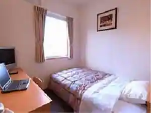
Maniwa City Hotel Sanraizu
足温泉 いづみ家
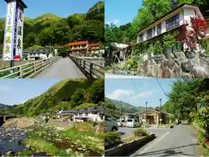
Ashi Onsen Izumi Ie
Inn at Ashi Onsen in Miyakokiashi, Maniwa.
星ノシタノゲストハウス
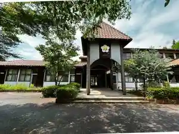
Hoshi Noshitano Guesthouse
Guesthouse in Taharayamagami, Maniwa with one group per day.
全室露天風呂付 愛犬と泊まれる温泉宿 わんこあん
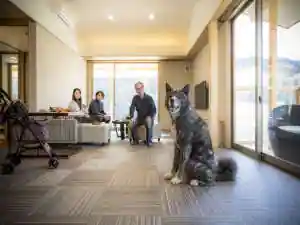
Zenshitsu Rotenburo Tsuki Aiken To Toma Reru Onsen Yado Wankoan
Inn at Inutotomareru Onsen in Shimoyuhara, Maniwa with open-air baths and pet-friendly rooms.
大江戸温泉物語 輝乃湯
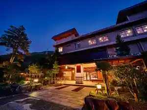
Oedo Onsen Monogatari Teruno Yu
Inn at Oedo Onsen in Toyosaka, Maniwa with open-air baths and buffet meals.
湯原アングラーズリトリート
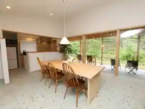
Yuhara Angurazuritorito
Inn at Nimitasareru Onsen in Toyosaka, Maniwa with a retreat concept.
湯原温泉 湯めぐりの宿 松の家 花泉
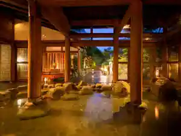
Yuhara Onsen Yu Megurino Yado Matsu No Ie Hanaizumi
Inn at Yuhara Onsen in Yuharaonsen, Maniwa.
旅館さつき荘
Ryokan Satsuki So
Ryokan inn at Kakenagashi Onsen in Yuharaonsen, Maniwa with free-flowing hot spring baths.
湯の蔵 つるや
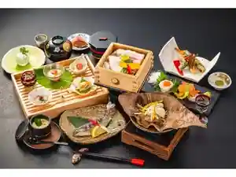
Yu No Kura Tsuruya
Inn at Motoshuzono Onsen in Yuharaonsen, Maniwa with open-air baths.
Dining
西蔵
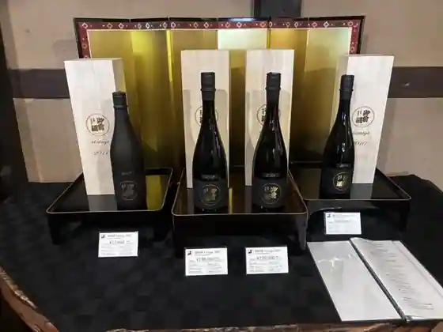
Chibetto
悠悠
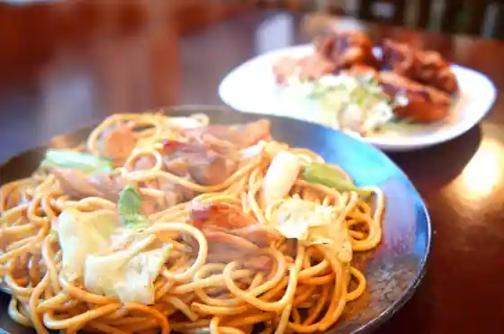
Yuyu
一心庵
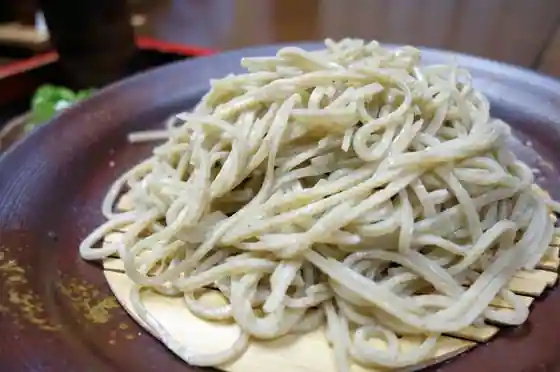
Isshin Iori
sei-daku 泡せ飲ム
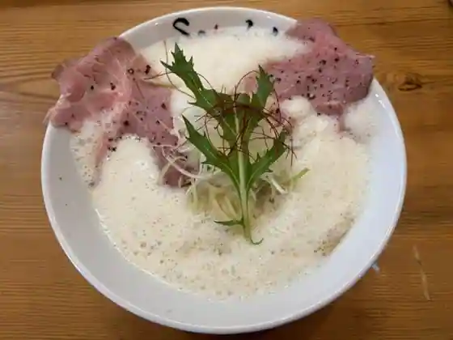
sei-daku Awa Se Inn Mu
蒜山酪農農協ひるぜんジャージーランド
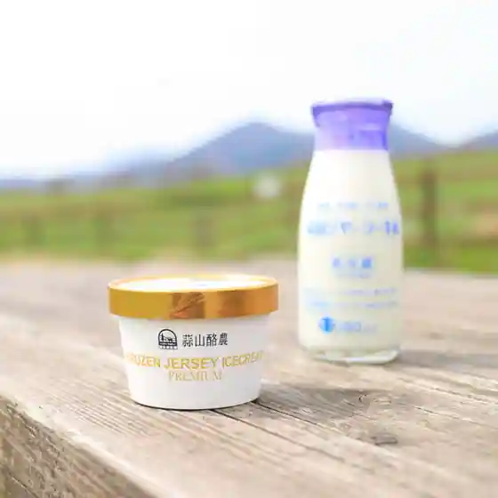
Hiruzen Rakuno Nokyo Hiruzen Jajirando
高原亭
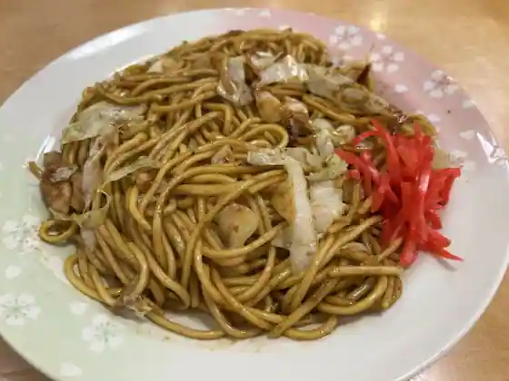
Kogen Tei
蒜山高原サービスエリア（上り線）レストラン
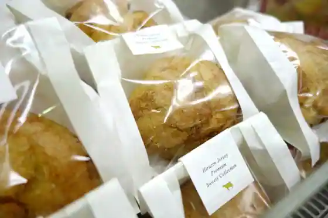
Hiruzen Kogen Sabisueria (Nobori Sen) Restaurant
蒜山手打ちそば 叉来
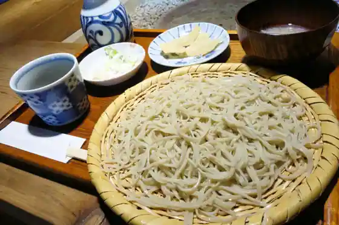
Hiruzen Teuchi Chisoba Sa Rai
ウッドパオ
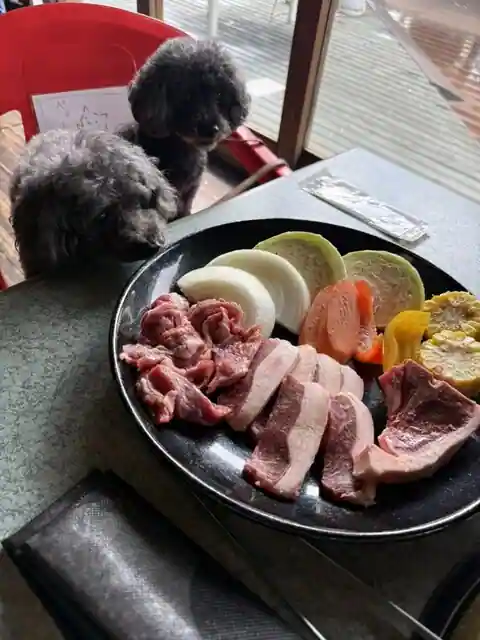
Uddopao
ひるぜん 大将
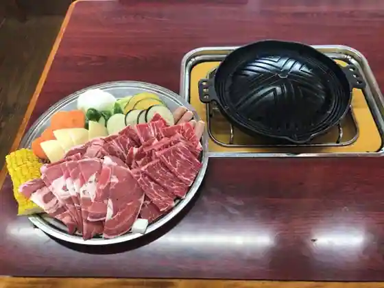
Hiruzen Taisho
ヒルゼン高原センターレストランファーミー
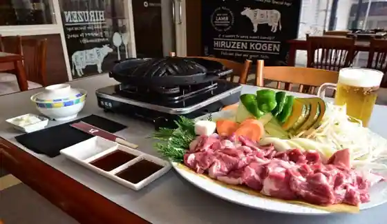
Hiruzen Kogen Center Restaurant Fami
とんかつ 喜楽
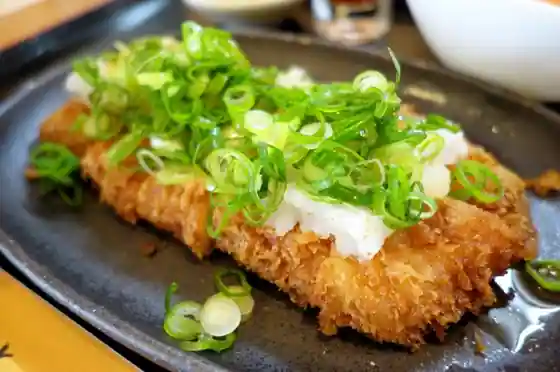
Tonkatsu Kiraku
味覚工房 そばの館
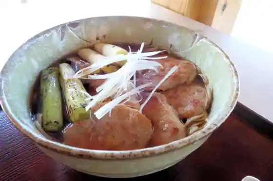
Mikaku Kobo Sobano Kan
古見屋羊羹
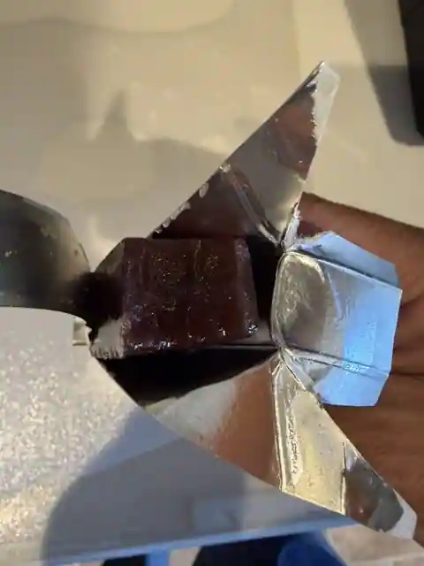
Furumi Ya Yokan
割烹旅館 おかもと
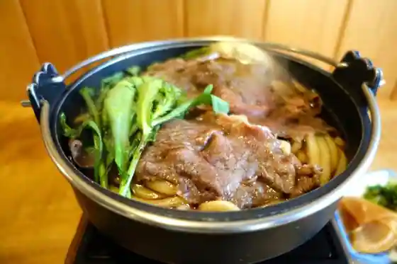
Kappo Ryokan Okamoto
ひるぜんワイナリー
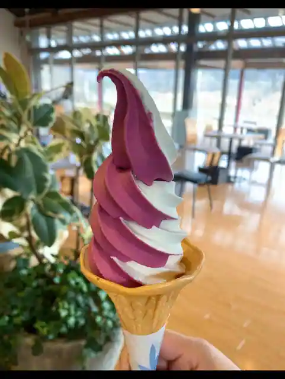
Hiruzen Wainari
いち福
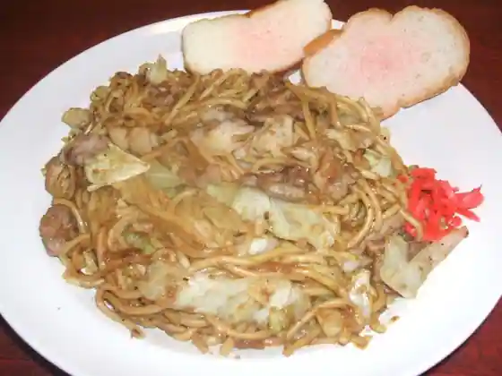
Ichi Fuku
蒜山高原サービスエリア(下り線) フードコート
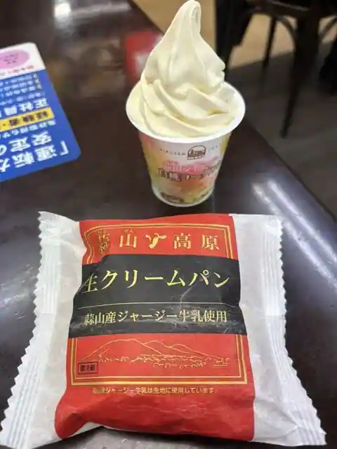
Hiruzen Kogen Sabisueria (Kudari Sen) Fudokoto
十字屋商店
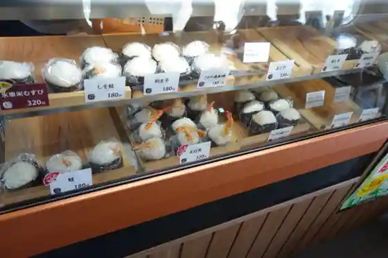
Jujiya Sho
蒜山ハーブガーデン ハービル
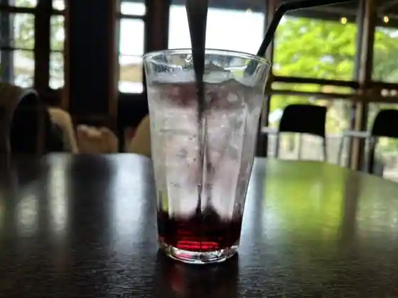
Hiruzen Habu Garden Habiru
もみぢの里
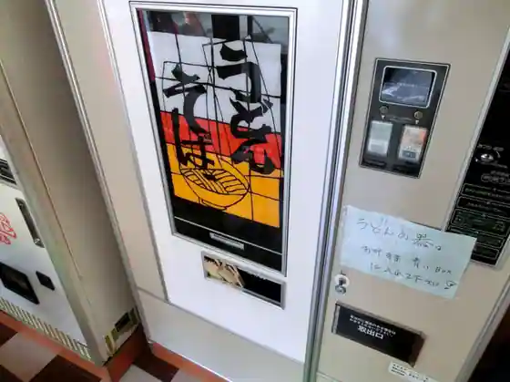
Momijino Sato
醍醐桜
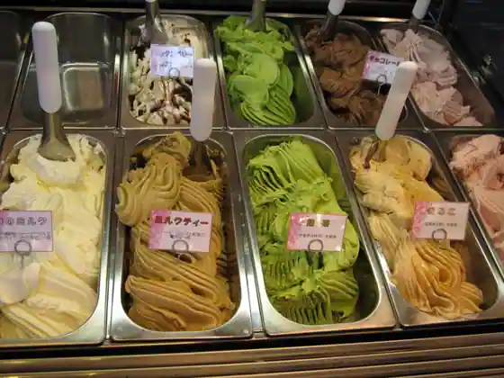
Daigo Sakura
粋呑房
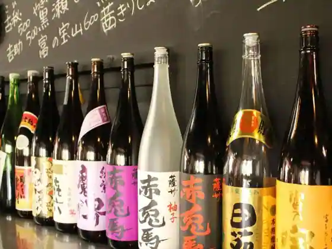
Sui Don Bo
手作りハンバーグとピザの店 ライオン
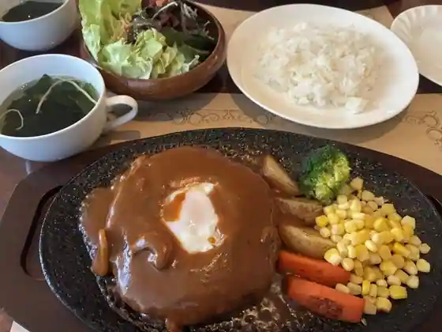
Tezukuri Hamburg To Pizza No Raion